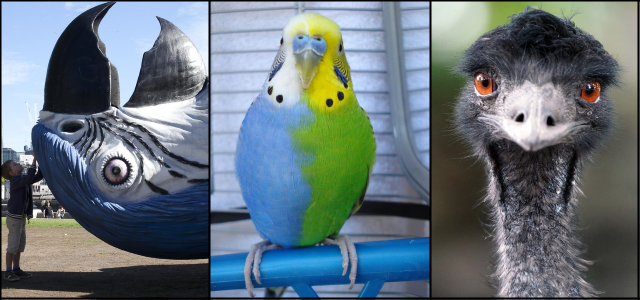
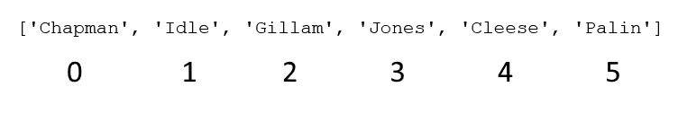
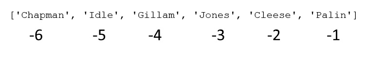

Chapter 2 - Variables, Data Types and Data Structures
This is a HTML document. The Introduction to Python course is written and intended to be used in a Jupyter Notebook file. These HTML documents have been made available for users who require screen readers or have other accessibility needs. These HTML documents have been tested and run through a correction process courtesy of the accessrmd package (git repo here. However, there are issues that can elude this package, so if you notice any errors or any compatibility issues please contact us at the Data Science Campus Faculty inbox from the link above, so that this can be logged for review.
If you are using a screen reader you will need to set your punctuation level (sometimes called verbosity) to full, especially for the code sections.
As you progress through these training materials, please run the code as you encounter it as this will preserve the flow of the course itself.
Chapter Overview and Learning Objectives:
- Identifiers
- Variables
- Naming objects
- Naming conventions
- Data Types
- Numerics
- Strings
- Booleans
- Type Conversion
- Data Structures
- Lists
- Tuples
- Dictionaries
- Indexing
- Accessing functions, methods and attributes
- Pandas Objects
- Packages
- Importing Pandas
- Series
- Data Frame
- Accessing Help
1 Identifiers
Python is an “object orientated programming language”, which means that Python everything is an “object”. Diving deep into what this means is far beyond the scope of this course, but you can think of an object as a collection of data (known as variables) and methods (known as functions, covered later) that act on those data. Each object is known as an instance (like an example of) of a larger group called a class, which is the blueprint for what each of those objects are and the methods they hold.
For more information, consult the Object Oriented Programming in Python course on the Learning hub, but ensure that you are fully comfortable and practiced with the content covered in both Core parts 1 and 2 in this course.
We’ll look at some of the most common objects in this section, like lists, tuples and dictionaries. We’ll also look at some specialised objects that are specific to certain Python packages, such as series and data frames from the Pandas package.
1.1 Variables
When we create objects in Python we assign it to a variable. Variables are words and numbers that act like labels; a reference to an object that lives in memory. Without this variable we can’t “find” the object again in memory and won’t be able to use it for analysis purposes.
In Python we assign variables using the equals sign (=), where our label (or variable name) goes on the left and the object we want to store goes on the right. Unlike other languages, in Python we do not have to state the data type of the variable we are storing in memory.
1.1.1 Example
x = 4 + 3Here we are storing an object (the sum of 4 + 3) and giving it the label of x. However, you’ll notice that when we run the cell above it does not output the value of x.
To see the value of x we can give Python the variable name, run the cell and it will output the value assigned to that variable.
x7Why do we have to ask Jupyter to output things?
When we assign a variable Python keeps it stored within memory for later use. While we’re learning or testing our code we may want to check our outputs regularly. However, once we’re confident the code operates as expected, outputting every stage isn’t necessary, in fact it’s not an efficient use of memory and is often discouraged.
What if we want to create two variables and output them?
1.1.2 Example
x = 4 + 3
y = "Hello"x
yIf the above code is run in Jupyter you will only see the output for the value of y. This is because jupyter prints one output per cell by default. As such, this ends up being y as it was run last in the chain of codes.
Note that the software used to create this HTML outputs both values - so the output of the above cell has been supressed.
If I want to print more I can use the incredibly handy print() function.
print(x, y)7 HelloPrint statements are very malleable and allow us to output multiple variables in numerous different ways. For example, a popular application is to construct a sentence, specifying where the outputs will be printed in the sequence of words. As before, we wrap text in quotation/speech marks and separate the resulting sentence out with commas.
print(y, "I am", x, "years old")Hello I am 7 years oldMany of the solutions in this course will be written like this, as one of their primary benefits is to avoid using multiple cells for output.
Finally, we can overwrite the values of a variable by reassigning it. This comes in handy when we accidentally assign something incorrectly or wish to edit the label that we have given it. Although, we should be careful when we’re assigning variables as Python does not warn us if a variable already exists before performing the operation!
In our previous example, y had the value of “Hello” which is a string. Let’s reassign it to an integer!
1.1.3 Example
y = 26
y261.2 Naming Conventions
Naming your variables can be one of the trickier parts of coding. Choosing sensible names saves time and energy later, when you try and remember what you’ve called something or if you need to refer to an object many times in code (after all, it can become tiring to consistently type out long variable names!).
Clever naming allows you to figure out what an object contains without having to inspect it first, a practice heavily adopted in code production and development.
Generally, a variable name:
- Must start with a letter or an underscore.
- Can’t begin with a number.
- Only contains alphanumeric characters and underscores.
- Is case sensitive (MY_VARIABLE and my_variable and My_vArIaBle are treated independently in Python).
- Must not have hyphens as these are treated as negative signs in Python.
Note that you may also have your own departmental guidance for naming variables, and if the guidance above contradicts these, always follow your departmental guidelines first.
General guidance recommends Python’s pep8 coding standards use of lowercase_with_underscores.
Consistency is important here, if you pick up your code after 6 months, or pass code on to your colleagues, using consistent names ensures your code is easy to pick up, reliable and higher quality.
“Always code as if the guy who ends up maintaining your code will be a violent psychopath who knows where you live. Code for readability.” - John F Woods
The Data Science Campus have their style guide linked online. It is worth bookmarking these style guides as they are very useful resources to return to.
Throughout this course we will use lower case words with an underscore between them, e.g:
music_df # The contents should be a DataFrame
cars_model # The contents should be a model
names_list # The contents should be a list
This is known as snake case and is one of the most widely used naming conventions in programming. For more information on clean code, consult the Best practice in programming course on the Learning Hub.
1.2.1 Exercise
- Try storing the value of Pi (3.14159) under an appropriate variable name
- Try mutliplying Pi by 2 and assigning this value to the name ‘double_pi’.
# (a)
# Store the value of Pi under an appropriate variable name
pi = 3.14159
# Return the value of pi
pi3.14159# (b)
# Multiply pi by 2
double_pi = pi * 2
double_pi6.28318You can see what variables you have declared by using the magic command
“%whos”
These magic commands work in Jupyter Notebooks and rely on an iPython console; in other programs such as VSCode, these won’t work in .py script files. Thankfully, the Jupyter extension in VSCode is compatible with these and even has an autofill function when it recognises a magic command!
This particular magic command exists because Juputer Notebook doesn’t have a typical variable explorer like other IDEs like VSCode, Spyder and more, so utilising this command will output (in text form) a variable table. In VSCode, this function is available after creating a variable as JUPYTER:VARIABLES at the bottom of the screen.
%whos| Variable | Type | Data/Info |
|---|---|---|
| pi | float | 3.14159 |
| x | int | 7 |
| y | int | 26 |
Note that your output may look different to what is shown in these notes; magic commands are unavailable in the software used to write this .html document.
You can delete variables by using the keyword del and then supplying the variable name.
del x If we run %whos again we’ll notice x no longer exists
%whos| Variable | Type | Data/Info |
|---|---|---|
| pi | float | 3.14159 |
| y | int | 26 |
Now, if we try returning x we will get an error message:
NameError: name 'x' is not definedFor the most part, error messages are quite informative in Python and we can understand from this one what went wrong. The variable named x is not defined as we deleted it.
You’ll also see this error if you make a spelling mistake or capitalisation error when referring to a variable since Python is case sensitive.
2 Data Types
2.1 Numerical
We’ll deal with two main types of numeric data types in Python.
int (plain integers) are positive or negative (including zero) whole numbers. float (floating point numbers) are decimal numbers.
The handy type() function in Python allows us to check the type of whatever we put within the brackets.
2.1.1 Examples
type(4)<class 'int'>type(4.5674)<class 'float'>This also works on variables that are assigned to values
type(y)<class 'int'>type(pi)<class 'float'>2.1.2 Exercise
- Store your age (as a int) and your height in metres (as a float).
- Print out a sentence specifying your age and height in one output.
Note that your height needs to be a number, Python will give an error if you try and store a variable like 1.6m.
# Create a variable for age (int)
age = 29
# Create a variable to store height (float)
height = 1.6
# Print out the variables
print("My age is", age, "and my height is", height, "m.")My age is 29 and my height is 1.6 m.Notice that there is a space between the height and the unit which we would like to avoid. How do we go about combining these? Stay tuned for the details!
2.2 Strings
Strings are sequences of character (word/text) data. The type in Python is called str. They are contained within either ‘single’ or “double” quotation marks and within your coding you should remain consistent with whichever you use.
We recommend that if you’re creating strings that use apostrophes or single quote marks within them, use double quotes to open and close your string.
2.2.1 Examples
print(type("Hello"), type("This is a string"), type('This string contains 5 words!'))<class 'str'> <class 'str'> <class 'str'>As you can see by running the cell above strings can also contain numbers and punctuation. We’ll look at this again later when we import data.
To illustrate the issues with mixing up quotation marks, the example cells below will provide an error message.
'Tom's phone'
"Sadia said "creating strings is easy" to the room "The following cell is an example of correct syntax, using double quotes to start and end our string that contains an apostrophe, and using single quotes for our string containing some speech works well.
"Tom's phone" , 'Sadia said "creating strings is easy" to the room'("Tom's phone", 'Sadia said "creating strings is easy" to the room')Notice how the whole strings are the same colour in the second example, this is known as syntax highlighting, which can be a very useful tell for when things are go awry and make troubleshooting much easier!
2.2.2 Exercise
Create a string that uses both types of quotation marks, perhaps recall a quote where someone said your name!
# String with both quotation marks
my_quote = 'During my MSc graduation, my mother said to me "Jake, you make me immensely proud everyday" and I have never forgotten it.'2.3 Boolean
Boolean values are sometimes called logical values in other languages and consist of two unique values, True and False.
In Python they must be spelt out fully and have a capital first letter. They are not text values; so do not require quote marks. They are a reserved word (special words in Python that cannot be used as variable names), and so are displayed in bold green text. We will see many more examples of these reserved keywords later.
As we’ll see later Python often evaluates expressions in a Boolean context; something is either True or False`. They even have parallels in the integers, namely that true has the value of 1 and false has the value of 0.
print(type(True), type(False))<class 'bool'> <class 'bool'>2.3.1 Exercise
- Test out the mathematics behind the Boolean values by adding together True and False.
- Will the expression 2 * True + False ** 3 work? (Recall that ** means raise to the power of).
# (a)
# Add together True and False
True + False 1# (b)
2 * True + 3 ** False32.4 Type Conversion
You can also use inbuilt functions to convert types within Python. For example, we have:
- int() - converts things to an integer,
- float() - converts things to a float,
- str() - converts things to a string.
We’ll look at some other ways to convert types later in the course.
2.4.1 Examples
print(float(3), int(5.7), str(3))3.0 5 32.4.2 Further Example
Remember earlier when we had a space between your height and the unit metres? We can use the str() conversion function to rectify this problem and provide a more sensible answer to that exercise.
# Better answer to Exercise
print("My age is", age, "and my height is", str(height), "m.")My age is 29 and my height is 1.6 m.But, wasn’t this supposed to rectify the problem? Not quite, there is one more little thing we need to add to merge the string of height and “m” together, this is called concatenation of strings and we use the + symbol to utilise it.
# Finally!
print("My age is", age, "and my height is", str(height) + "m.")My age is 29 and my height is 1.6m.3 Data Structures
In this section we are going to explore some of the common data structures in Python. So far we have only stored one piece of information in memory; whereas we will usually want to store many. These data structures provide us with a particular way of organising data so it can be accessed efficiently. How you store it will often depend on how you want to use it later, so the choice is often an important one.
Due to Python’s Object Oriented nature, we create objects to do things to. We’ve already created objects (everything is an object in Python, even just a simple string or integer) but as we move into later sections of the course you may hear these data structures referred to as objects (this is often the case when researching too).
Expanding a little on the notion of a class (or template for objects we create) mentioned earlier, Objects (known as an instance of a class) of the same class may look different but have key elements that are the same. A class of “bird” may have the instances “Norwegian Blue Parrot”, “Budgie” and “Emu”, which all look very different but are all fundamentally birds.

Note that this is a slight oversimplification and understanding the ins and outs is not necessary to proceed in this course, but can be very useful, especially as you progress on to more complicated programming.
Objects have methods (actions) and attributes (descriptive information about the object) which are often specalised to that kind of object. For example an object that contains text strings can be made lowercase; where as this wouldn’t apply to an object containing numbers. These are different to functions (e.g print()) that we’ve seen so far. We’ll look at these in more detail later in this chapter.
3.1 Lists
A list is a type of container; it holds a collection of items. The items in a list have an order (known as an index). They:
- Are the most versatile of the built-in data structures
- Can hold any sequence of objects
- Can hold mixed objects (like strings, integers and Booleans together)
- Are mutable (can be changed, we can add objects, delete them etc)
They can also do many more advanced techniques which are beyond the scope of Core Part 1. Some excellent use cases for lists are provided in Core Part 2 (See the list comprehensions section).
We create lists in Python using square brackets [ ] and separate each item with a comma.
3.1.1 Examples
# Create my list
the_pythons = ["Chapman", "Idle", "Gillam", "Jones", "Cleese", "Palin"]
# Display my list
the_pythons['Chapman', 'Idle', 'Gillam', 'Jones', 'Cleese', 'Palin']As you see, since we are still creating an object, assignment remains the same, with the variable name/label on the left and the object itself on the right. This list “the_pythons” is a list containing only strings, where each string has indeed been separated by a comma. Displaying the output is also the same, providing Python the name of the object.
Let’s see a numeric example!
# Create numeric list
num_list = [3, 0, -3, -4, 7, 9]
num_list[3, 0, -3, -4, 7, 9]3.1.2 Exercise
- Store at least three hobbies within a list. Choose an appropriate variable name.
- Create a list with a string, a float, an integer and a boolean value, give it a fun name!
# (a)
hobbies = ["Swimming", "Shopping", "Golf", "Extreme Ironing"]
# Return the list
hobbies['Swimming', 'Shopping', 'Golf', 'Extreme Ironing']# (b)
pic_n_mix = [True, 5.6, -5, "What!"]
pic_n_mix[True, 5.6, -5, 'What!']We can also create lists using the list() function, but this is more useful for converting from one data structure to another, for example changing a tuple to a list (stay tuned for a fun exercise!).
3.2 Tuples
Tuples are similar to lists but have two major differences that separate them into their own object category with its own niche uses. These are:
- Tuples are immutable (unchangeable)
- Tuples are created with round brackets ( )
We’ll often see lists and tuples as inputs or outputs for the programming we do. If you see values in round brackets as the outputs from a process, this is indeed a tuple.
3.2.1 Example
# Create my tuple
days_of_the_week = ("Monday", "Tuesday", "Wednesday", "Thursday", "Friday", "Saturday", "Sunday")
#print out my tuple
days_of_the_week('Monday', 'Tuesday', 'Wednesday', 'Thursday', 'Friday', 'Saturday', 'Sunday')As with lists, we separate each value with a comma and despite this example being string focused, we can also mix datatypes inside the tuple.
3.2.2 Exercise
- Store the names of the following in a tuple, name it funny_pet.
- A pun name for a pet
- A suitable age for a pet
- Colour of their fur/skin
- Convert funny_pet to a list using the list() function, reassign it and return it.
# (a)
funny_pet = ("David Meowie", 5, "Tortoiseshell")
funny_pet('David Meowie', 5, 'Tortoiseshell')# (b)
funny_pet_list = list(funny_pet) # list() converts the tuple to list []
funny_pet_list['David Meowie', 5, 'Tortoiseshell']We can also create tuples using the tuple() function (see a recurring theme here?).
When we say something is mutable or immutable we mean changing the contents programmatically. There are methods we’ll see later where we can add or remove a value from a list; like .append(), .extend() or .pop(). You can look forward to some fun examples when they arise!
We can’t do that to tuples; the only thing we can do is write over them in memory by assigning a new tuple to the same variable, which isn’t changing the values, just overwriting it entirely, a technical but important difference!
3.3 Nesting & Combinations
Now that we have introduced lists and tuples, let’s have a look at how these can be combined as well as the very important concept of nesting. We know that lists and tuples contain objects themselves, but (see where we are going?) they themselves are objects! This means that we can have:
- Lists that contain tuples (and vice versa)
- Lists that contain lists
- Tuples that contain tuples
- Lists that contain tuples and lists (and vice versa)
This is alot to comprehend but further illustrates Python’s object-oriented nature, in that objects can be combinations of objects and so on and so forth.
Let’s see an example!
3.3.1 Examples
# List of tuples
days_and_weather = [('Monday', 'Rain'), ('Tuesday', 'Sun'), ('Wednesday', 'Snow'), ('Thursday', 'Sun'), ('Friday', 'Fog'), ('Saturday', 'Snow'), ('Sunday', 'Cloudy')]
days_and_weather[('Monday', 'Rain'), ('Tuesday', 'Sun'), ('Wednesday', 'Snow'), ('Thursday', 'Sun'), ('Friday', 'Fog'), ('Saturday', 'Snow'), ('Sunday', 'Cloudy')]# Tuple of tuples
weather_by_day = ('Monday', 'Rain'), ('Tuesday', 'Sun'), ('Wednesday', 'Snow'), ('Thursday', 'Sun'), ('Friday', 'Fog'), ('Saturday', 'Snow'), ('Sunday', 'Cloudy')
weather_by_day(('Monday', 'Rain'), ('Tuesday', 'Sun'), ('Wednesday', 'Snow'), ('Thursday', 'Sun'), ('Friday', 'Fog'), ('Saturday', 'Snow'), ('Sunday', 'Cloudy'))Notice that we don’t need to wrap the tuple into a pair of brackets () if we don’t want to (you can, but Python will recognise this by using the commas to separate the tuples).
# List of lists
weather_forecast = [['Monday', 'Rain'], ['Tuesday', 'Sun'], ['Wednesday', 'Snow'], ['Thursday', 'Sun'], ['Friday', 'Fog'], ['Saturday', 'Snow'], ['Sunday', 'Cloudy']]
weather_forecast[['Monday', 'Rain'], ['Tuesday', 'Sun'], ['Wednesday', 'Snow'], ['Thursday', 'Sun'], ['Friday', 'Fog'], ['Saturday', 'Snow'], ['Sunday', 'Cloudy']]So as you can see, the objects we create can be quite complicated indeed! Now it’s your turn!
3.3.2 Exercise
- Create a list (named appropriately), that contains:
- A list of subject names
- Tuples that contain an exam score and a subsequent grade, such as (94, ’A*’)
- Use the tuple() function to change the list in (a) to a tuple.
# Create list
exam_scores = [['Mathematics', 'Geography', 'ICT', 'English', 'Science'], (98, 'A*'), (78, 'B'), (85, 'A'), (65, 'C'), (42, 'E')]
exam_scores[['Mathematics', 'Geography', 'ICT', 'English', 'Science'], (98, 'A*'), (78, 'B'), (85, 'A'), (65, 'C'), (42, 'E')]# Convert to tuple
not_my_exam_scores = tuple(exam_scores)
not_my_exam_scores(['Mathematics', 'Geography', 'ICT', 'English', 'Science'], (98, 'A*'), (78, 'B'), (85, 'A'), (65, 'C'), (42, 'E'))The applications of this are limited hence why this section was kept short, but it can not be overstated how customisable these data structures are in terms of their contents.
3.4 Dictionaries
The third object type we’ll look at is Dictionaries, which also store a collection of objects similarly to lists and tuples. They are:
- Unordered (no index, unlike with tuples and lists)
- Mutable (unlike tuples)
- Can contain lists and other (nested) dictionaries
To create a dictionary in Python, we use the only type of brackets we have yet to utilise, the curly braces that often feature in mathematics {}. Dictionaries contain key value pairs (these are different from tuples!), where Keys are usually integers or strings (an immutable data type) and Values can be any type of object. Syntax wise, these pairs are separated by a colon, written as “Key:Value”.
This is a more complex data structure, so let’s motivate this with an example!
3.4.1 Example
# Create a small dictionary
my_info = {"name": "Jake Marshall",
"occupation": "Trainee Data Science Lecturer",
"favourite subject": "Mathematics"}
my_info{'name': 'Jake Marshall', 'occupation': 'Trainee Data Science Lecturer', 'favourite subject': 'Mathematics'}So as you can see, we are doing a sort of assignment process here, where name is being set to Jake Marshall, occupation is being set to Trainee Data Science Lecturer and so on. However it is important to note that this is limited to just this object! If you attempt to type name outside of the dictionary, Python will throw an error.
We can also have more complex dictionaries, with values being set to other data structures, like lists.
# Create my dictionary
brian_information = {"name": "Brian Cohen",
"occupation": ["messiah ", "very naughty boy"],
"enemy": "Pontius Pilate",
"outlook": "Look on the bright side of life"}
# Print the dictionary
brian_information{'name': 'Brian Cohen', 'occupation': ['messiah ', 'very naughty boy'], 'enemy': 'Pontius Pilate', 'outlook': 'Look on the bright side of life'}Depending on your version of Python the dictionary may print out in alphabetical order or the order you supplied the values in. We’ll see later on that we index (look up values) in a dictionary by the “key”; so it doesn’t matter how it displays.
Now, over to you!
3.4.2 Exercise
Make a dictionary containing the following;
- Use cities as keys
- Use sports team names as values.
- Make one value a list.
- Choose an appropriate variable name.
For example,
- Newport has Newport County
- Manchester has Manchester City and Manchester United
- Fareham has Fareham Town
football_clubs = {"Newport": "Newport County",
"Leicester": "Leicester City",
"Manchester": ["Manchester City", "Manchester United"],
"London": ["Brentford", "Queens Park Rangers", "Chelsea", "Fulham", "Arsenal", "West Ham", "Millwall"],
"Grimsby": "Grimbsy Town",
"Fareham": "Fareham Town"}
# Return the dictionary
football_clubs{'Newport': 'Newport County', 'Leicester': 'Leicester City', 'Manchester': ['Manchester City', 'Manchester United'], 'London': ['Brentford', 'Queens Park Rangers', 'Chelsea', 'Fulham', 'Arsenal', 'West Ham', 'Millwall'], 'Grimsby': 'Grimbsy Town', 'Fareham': 'Fareham Town'}We can also create dictionaries using the dict() function which requires us to assign within a function, which is a different concept in programming than assigning outside of one. These refer to parameters (which are the names/labels) and arguments (which are the values) within functions.
These will be explained in more detail later in the course, but as an example, let’s have an informal introduction to utilising them with the dict() function.
3.4.3 Example
# Using the dict() function
jake_info = dict(name = "Jake Marshall", occupation = "Trainee Data Science Lecturer", favourite_subject = "Mathematics")
jake_info{'name': 'Jake Marshall', 'occupation': 'Trainee Data Science Lecturer', 'favourite_subject': 'Mathematics'}Notice the very subtile difference when it comes to the favourite subject entry? Since we are assigning a label, just as it was outside of the function, we cannot have spaces! As such we will need to fill the gap with something like an underscore, which unfortunately does affect the final name. As such, if you want to create a dictionary with longer strings as the keys, manually building one with {} is a better option since you have more control.
4 Indexing
Prior to this chapter we have created a variety of data structures containing numerous objects. Working with data means that we will often want to select specific objects (or even a range of them) from our data structures. To do so is called indexing and we use square brackets [] to accomplish this.
4.1 Indexing by Position
Let’s look at the list the_pythons we defined earlier

Each item within our list (or tuple) has an index, due to their ordered nature (remember that this is not true for dictionaries!). This relates to it’s position in the object.
Contrarily to other programming languages, Python starts indexing at 0, which is something we must get used to when learning the language. (Think of it as starting on the ground floor of a building, then going up to the first floor).
In order to return the element in the list we can simply give the object name, then the index of the item we want to return within square brackets.
4.1.1 Example
The code below will return the value Jones
# Note that there are no spaces, we follow the object name with []
the_pythons[3]'Jones'We can also use what’s known as negative indexing, where the order of the list is reversed and the first element is denoted with -1 as opposed to 0. Think of this as the negative sign reversing the order of the list (taking the place of the 0) and then we count from 1. As an informal example, consider the list [1, 2, 3]. In terms of positioning, we have:
- –> [position 0, position 1, position 2]
- <– [position -3, position -2, position -1]
Where [0] = [-3] here and beyond. This technique can be really useful when we wan’t to access a specific value without actually knowing how many elements there are in the object.
In the case of “the_pythons”, we have:

4.1.2 Example
The code in the next cell will return the same values.
print(the_pythons[0], the_pythons[-6])Chapman ChapmanFor a list, we can use also use this indexing method to overwrite values in a list. As tuples are immutable, and cannot be changed once created, this would not work on the days_of_the_week tuple. This is why it is also worth keeping in mind the differences between these data structures when selecting them for applicable tasks.
Overwriting can be really useful when working with smaller data structures, let’s see an example!
4.1.3 Example
the_pythons[4] = "Cheese" # Select the item at index 4 and overwrite it with "Cheese"
# Return our modified list
the_pythons['Chapman', 'Idle', 'Gillam', 'Jones', 'Cheese', 'Palin']4.1.4 Exercise
The code below provides you a new list, of different types of parrot. They’re just resting; and pining for the Fjords.
- Use indexing to return the element Norwegian Blue from the list.
- Use negative indexing to return the same element as in (a).
parrots = ["Cockatoo" , "Macaw", "Parakeet", "Lorikeet", "Norwegian Blue", "Conure"]# (a)
parrots[4]'Norwegian Blue'# (b)
parrots[-2]'Norwegian Blue'4.2 Sequential items
If we want to select more than one sequential item we can use a colon (:) between the first index position (inclusive) and the last index position (exclusive).
It is important to remember that the last index is exclusive in this case, it will not be included and, as expected, inclusive refers to its inclusion!
4.2.1 Example
As a reminder our the_pythons list looks like this
If I wanted to select the values Idle, Gillam, Jones the following code:
the_pythons[1:3]['Idle', 'Gillam']would not give the output we want. The fourth element (which we want!) was excluded, as such we must add 1 to that second index. To obtain what we need we use:
the_pythons[1:4]['Idle', 'Gillam', 'Jones']This will require some practice to get used to since we are not only counting from 0 (as opposed to 1) but we are also specifying the index one higher than we expect.
If we want to select from the beginning or to the end of the list without specifying a start or end point respectively, we can leave the position before or after the colon blank respectively.
4.2.2 Example
This first code example here selects from the start of the list to Gillam (remember the last number is exclusive) and the second selects from Idle at index 1 to the end of the list.
print(the_pythons[:3], the_pythons[1:])['Chapman', 'Idle', 'Gillam'] ['Idle', 'Gillam', 'Jones', 'Cheese', 'Palin']4.2.3 Exercise
From the parrots list use indexing to return the following sets of elements
- Macaw, Parakeet, Lorikeet, Norwegian Blue
- Lorikeet, Norwegian Blue, Conure
- Macaw, Parakeet, Lorikeet, Norwegian Blue, Conure
As a reminder parrots looks like this:
parrots['Cockatoo', 'Macaw', 'Parakeet', 'Lorikeet', 'Norwegian Blue', 'Conure']# (a)
parrots[1:5]['Macaw', 'Parakeet', 'Lorikeet', 'Norwegian Blue']# (b)
parrots[3:6]['Lorikeet', 'Norwegian Blue', 'Conure']# (c)
parrots[1:]['Macaw', 'Parakeet', 'Lorikeet', 'Norwegian Blue', 'Conure']These methods also work for tuples.
4.2.4 Example
Using the days_of_the_week tuple we declared earlier, below I return, Wednesday, the week days and the weekend days.
print("The element at index 2 is", days_of_the_week[2])The element at index 2 is Wednesdayprint("The weekdays are:", days_of_the_week[:5])The weekdays are: ('Monday', 'Tuesday', 'Wednesday', 'Thursday', 'Friday')print("The weekend days are:", days_of_the_week[-2:])The weekend days are: ('Saturday', 'Sunday')4.3 Non sequential items
There’s no direct inbuilt way of accessing non sequential items (for example, returning the 1st element, 3rd element and 5th element, but not those in between). In other languages like R this is simple to do; but not so much in python.
4.3.1 Example
We can use a function called itemgetter from the operator package to do this if we wish. This takes as an input, the indexes we want to return, say 2 and 5 and then the list.
We also have to import the function from the package, which again will be explained later.
You may not understand this code currently and don’t worry about the details for now, it is shown for completeness as it’s a common question from learners that we have had throughout the years.
from operator import itemgetter
itemgetter(2, 5)(the_pythons)('Gillam', 'Palin')4.4 Indexing a Dictionary
Indexing a dictionary is slightly different from indexing a list.
As dictionaries are unordered data, they do not have a numerical index, like our lists and tuples do. This is where keys come in and why they are so important. We use our square brackets as before and instead specify the specific key to the values we wish to return.
4.4.1 Examples
Let’s return Brian’s name from the dictionary we created earlier about him (he would be thrilled!) and my favourite subject from the dictionary I created about myself.
print(brian_information["name"], my_info["favourite subject"])Brian Cohen Mathematics4.5 Multi-variable Assignment with Tuples
So far we have assigned tuples as a singular object with a single label, but one of their most useful functions is for assigning multiple variables at once. We can do this by using the comma that creates a tuple on both sides of the equals sign, ensuring that the number of labels on the left hand side is equivalent to the number of values on the right hand side.
4.5.1 Example
# Multi-variable assignment
my_name, my_age = ("Jake", 26)
print("My name is", my_name, "and my age is", my_age)My name is Jake and my age is 26You see here that each variable has been assigned and can be utilised separately, or together as they were originally assigned.
We can also swap variable names using this method of assignment, just to evidence this, let’s make the truly nonsensical statement that my name is 26 and my age is “Jake”.
my_name, my_age = my_age, my_name
print("My name is", my_name, "and my age is", str(my_age)+",", "wait what?")My name is 26 and my age is Jake, wait what?4.6 Utilising Functions, Methods and Attributes
Unlike other programming languages we can perform actions, or get information from Python in a variety of ways
- Functions
- Methods
- Attributes
Functions are pieces of code that are called by name. They are a set of statements that take inputs, do something to it, and produce an output. The concept is that we can perform a commonly done or repeated task by just calling the function, without needing to repeat code. It can be awfully dull to type (or copy and paste) the same line of code multiple times when a simple function call applied on the data structure solves this problem for us.
We can even create our own user defined functions. Information on how to do this will be covered in the Core Part 2 section of this course, where there is a large chapter dedicated to this practice. Prior to this edition of the course, this content was contained (albeit with a few less chapters and sub-chapters) in the standalone Control Flow, Loops and Functions in Python course on the Learning Hub.
For now let’s have a look at some of the inbuilt functions in Python. Python 3.6, Python 3.8
We’ve already seen * type() - tells us the kind of object we put within the brackets. * int(), float(), str() - for type conversion. * dict(), tup(), list() - for creating in-built data structures.
4.6.1 Exercise
Try running the function len() on the list the_pythons. Can you work out what the output is (Put this in a comment!).
Try running it on another list to confirm your suspicions
# (a)
len(the_pythons)
# This prints out the length of the list, a.k.a the number of items in the list 6# (b)
len(num_list)6Note that the_pythons is a variable and has no quotation marks, specifying this within the len() function does something different and counts the number of characters in the string, which would result in 11 when run on “the_pythons”.
4.6.2 Methods
Each object has it’s own methods and attributes that relate to that object. These are incredibly useful in that they allow us to perform numerous operations to our objects via methods and display information about them via attributes.
For example, we can use the method .sort() on our parrots list we created earlier.
So what is with this notation? When performing operations on objects, we use dot notation where we follow the name of the object with the full stop and then the method or attribute we wish to use. Note that throughout, methods are functions and as such, have two round brackets () at the end, whereas attributes are not functions and as such, feature no brackets at all.
4.6.3 Example
Let’s apply the .sort() method to a list to….sort it in order of course!
- Firstly we tell python the object we want to work on by specifying the name.
- Secondly we use the dot notation to reference the object.
- Thirdly we call our method, here this is .sort() and finish it with round brackets.
# A reminder of how we created the original list
parrots = ["Cockatoo" , "Macaw", "Parakeet", "Lorikeet", "Norwegian Blue", "Conure"]
# Use the sort method to sort the list
parrots.sort()
# Print out the parrots list to see what's happened.
parrots['Cockatoo', 'Conure', 'Lorikeet', 'Macaw', 'Norwegian Blue', 'Parakeet']We see that this sorted the list in alphabetical order, which is a really nice feature that Python has by default! If the list had been numeric, then this would’ve been sorted from lowest to highest as expected.
Here we’re using a method that does not have any mandatory parameters (hence why it remained as ()), but that doesn’t mean that there aren’t ways to tweak the output of the method (what if we wanted things sorted in descending order?). We’ll look at how you can find out what parameters a method or function has in the next chapter.
There are a large number of methods available for many of the data structures we use in Python, many of which we won’t have chance to cover in this course. Here is an excellent resource from the official Python documentation on list methods for you to experiment with should you wish.
It is recommended you build up a folder of bookmarks that lead to official documentation (as well as other excellent resources), that way it is easy to access a variety of different pages that can assist you with the task you are aiming to complete.
4.6.4 Example
Let’s try using .extend() on the parrots list we created earlier. .extend() adds items to our list. Since this method adds new items, it does indeed have a mandatory parameter (or input), namely what we wish to add to the existing list we have specified.
- 1st We create a new list, with the objects we want to add.
- 2nd We tell python the object we want to work on – here by giving the variable/identifier parrots.
- 3rd We use the full stop or “dot notation”
- 4th We call our method, here this is .extend() and open our round brackets.
- 5th We need to tell the method what to add, in this case the list we created earlier. We put this in the round brackets.
# Create a new list with more birds
more_parrots = ["Lovebird", "Kea", "Rosella"]
# Use the extend method to add the new list more_parrots to our parrots list
parrots.extend(more_parrots)
# Print out the parrots list to see what's happened.
parrots['Cockatoo', 'Conure', 'Lorikeet', 'Macaw', 'Norwegian Blue', 'Parakeet', 'Lovebird', 'Kea', 'Rosella']Of course, it can sometimes be time consuming to set the items we wish to add as a separate variable in memory (and in some cases is a less efficient use of it!). In these cases, we specify the list of items to add as the input/argument to the extend() function.
# Overwrite parrots with the original
parrots = ['Cockatoo', 'Conure', 'Lorikeet', 'Macaw', 'Norwegian Blue', 'Parakeet']
parrots.extend(['Lovebird', 'Kea', 'Rosella'])
parrots['Cockatoo', 'Conure', 'Lorikeet', 'Macaw', 'Norwegian Blue', 'Parakeet', 'Lovebird', 'Kea', 'Rosella']4.6.5 Exercise
Let’s introduce a new method for you to have a go with! The method .pop() for lists removes the item from the specified position, the argument you need is the index position (an integer!) from the list.
- Check that your parrots list is sorted, if not, sort it!
- Use the .pop() method on the parrots list to remove the value Norwegian Blue from the list.
A reminder of parrots is below as of the previous example.
parrots['Cockatoo', 'Conure', 'Lorikeet', 'Macaw', 'Norwegian Blue', 'Parakeet', 'Lovebird', 'Kea', 'Rosella']# (a)
# parrots.sort() # (b)
parrots.pop(4)
# Look at the list to see what's removed'Norwegian Blue'parrots
# Note - if you didn't order your list; this will remove a different element!['Cockatoo', 'Conure', 'Lorikeet', 'Macaw', 'Parakeet', 'Lovebird', 'Kea', 'Rosella']4.6.6 Attributes
Sometimes we’ll want to find something out about an object, these descriptive elements are known as the attributes of the object and, whilst they are called in a similar way to methods with dot notation, they do not have round brackets!
An example is the following:
my_dataframe.shape
More complex data structures are more likely to have attributes we would like to see and as such we will utilise these alot more in chapter four. Do not worry about what Dataframes are just yet, you will see them at the end of the chapter.
4.6.7 Example
To find the methods and attributes for an object you can use
dir(the_pythons)['__add__', '__class__', '__contains__', '__delattr__', '__delitem__', '__dir__', '__doc__', '__eq__', '__format__', '__ge__', '__getattribute__', '__getitem__', '__gt__', '__hash__', '__iadd__', '__imul__', '__init__', '__init_subclass__', '__iter__', '__le__', '__len__', '__lt__', '__mul__', '__ne__', '__new__', '__reduce__', '__reduce_ex__', '__repr__', '__reversed__', '__rmul__', '__setattr__', '__setitem__', '__sizeof__', '__str__', '__subclasshook__', 'append', 'clear', 'copy', 'count', 'extend', 'index', 'insert', 'pop', 'remove', 'reverse', 'sort']This function returns the attributes and methods of a specified object, here a list.
It doesn’t tell you if something is an attribute or a property, and it doesn’t give you any values to pass to the methods; but can be useful to see if something you want to do has a function or method that looks about right. When combined with the help documentation in Python as well as the linked pages we provide here, they can be explored in more detail.
Like with lists, there is some great Python information from W3Schools around tuples and dictionaries.
5 Pandas Objects
Now we have reached the most exciting part of the chapter, where we introduce one of the most popular Python libraries there is! It is known as pandas and was originally written by Wes McKinney, and is the most preferred, most used tool when data wrangling tabular data (data in the form of a table, think an Excel spreadsheet with rows and columns) within Python.
Libraries such as this are most commonly referred to as packages and it will be the bread and butter of the rest of the course.
5.1 Packages
Packages are a collection of functions, objects and compiled code which are stored in a “library” of code within Python. There are an unprecedented number of these in existence and more continue to be created each year, so much so that there is an official Python Package Index known as PyPi which is a repository (collection of, library) of all possible packages as well as links to their install.
Packages can also be obtained from being shared by colleagues or even downloaded from the internet. Caution should be taken when using the latter, as there could be malicious software in the bundle.
Our Anaconda installation gives us access to quite a few packages “out of the box”:
ONS users may have Anaconda 4.4.0 - see a full list of default anaconda 4.4.0 packages
Or may have Anaconda 2020.07 - see a full list of default anaconda 2020.07 packages
You can find the default packages for other versions at this link. You can also do this in jupyter by running the code “! conda list”
All the packages we use for this course are already downloaded as part of the Anaconda distribution and as such there shouldn’t be in any issues regarding package install. You can check your version of Python and your version of Anaconda by using the following commands within Jupyter code cells. The ! allows us to access command line commands in Jupyter.
from platform import python_version
print("Python Version", python_version())Python Version 3.8.13print("Anaconda Version")
# !conda list anaconda$Anaconda VersionFor installing packages that are not included within the Anaconda distribution there are a few options. The most popular being pip and conda.
Within ONS our packages are hosted on a mirrored version of PyPi called “Artifactory”. This may be familiar to you if you use R. Please see the instructions on the Coding Getting Started Wiki (ONS only) for installing additional packages.
Other government departments have their own rules regarding installation of packages, please contact your IT department or Data Science department for guidance.
5.2 Importing Pandas
In order to use the functionality of the Pandas package within our Python code; we first need to import it, which should be the first step for every script we write in Python. Compiling the imports into a single code cell at the very top of your work is a very efficient way to inform anyone picking up your code what they will need.
To use the functions within a package we need to import it by using an import statement, this features some keywords that are reserved in Python.
import pandas as pdWhen we import a package we don’t get any feedback it’s worked. In Jupyter the cell will change from a green to blue, and the line number will increase.
We start by using the keyword import, which will be green due to syntax highlighting.
We then give the package name *in full**
The keyword as allows us to give a nickname to the package, this is called an alias, here we use pd which is a widely recognised nickname for pandas (of course you can choose your own if you wish).
We don’t have to give nicknames to packages; however, it’s a very common standard; that saves us some typing. We’ll often need to reference the package containing the function; e.g pd.Series() - which is much faster than pandas.Series().
5.3 Checking Package Versions
All packages have versions; this allows code to be updated, extended or modified as time goes on. For reproducibility purposes, as well as searching for help it can be important to know which version of a package you’re using.
Most packages follow the PEP8 guidelines we talked about previously and allow you to find the version of a package using the following command.
pd.__version__
# Note here there's TWO underscores before *and* after version.'1.4.3'Within ONS our current version of Pandas is 1.4.2, which all course material is designed around. If you have an older version you may find some parts may not work as expected.
If you have a more modern version you may find some small changes; like different parameter names or possibly more streamlined ways to write certain parts of code.
Most versions are backwards compatible so should function as expected.
5.4 Series
Pandas gives us two new object types, one of which is universally popular.
Series are:
- One dimensional arrays
- Act like columns in a spreadsheet
- Must have items of the same type (int, float or str)
- Has a series index, which defaults to start at 0
Series have a large number of special methods and procedures associated with them; which we’ll explore in this course. In the following example we will create a series from scratch, but this is not something we often do in practice, hence why the other data structure will be the focus of this course.
5.4.1 Example
To create an object from pandas (or any package) in this case a series, we:
- Assign a name to the object you will create
- Reference the package (be it the full name or the alias you created) by typing it out.
- Use dot notation, as we are taking the Series function from pandas (this is NOT a method as pandas is a package not an object!)
- Provide the Series function a list of objects that will be converted to an ordered series.
python_movies = pd.Series(["And Now For Something Completely Different",
"Monty Python and the Holy Grail",
"Monty Python's Life of Brian",
"Monty Python Live at the Hollywood Bowl",
"Monty Python's Meaning of Life",
"Monty Python Live (Mostly)"])
# Display the series below the cell.
python_movies0 And Now For Something Completely Different
1 Monty Python and the Holy Grail
2 Monty Python's Life of Brian
3 Monty Python Live at the Hollywood Bowl
4 Monty Python's Meaning of Life
5 Monty Python Live (Mostly)
dtype: objectWe see that Pandas created a column of the objects we specified to the Series() function, ordered from 0 to 5 and it even tells us the datatype of each value in the series, remember that objects refer to strings.
5.5 DataFrames
DataFrames are
- A two dimensional version of the series object
- Like a whole spreadsheet with both rows and columns.
- Essentially a collection of series objects (one series per column)
where
- A column can only have one data type
- Each subsequent column can have a different data type
- The dimensions are labelled similarly to a series object
- index refers to the row labels, defaults to starting at 0
- columns refers to the column labels, or headers.
The DataFrames will have some of the same methods as Series and some different, with the major methods they both share being heavily utilized in Data Analysis, with no series specific method worth mentioning over dataframes themselves.
To create a dataframe from scratch (which again, is something we don’t often do in practice, more on this in Chapter 3) we must do the following:
- Create a number of Series() objects that will represent the columns in the dataframe (the positions should line up if you wish the columns to be linked, for example name and age).
- Assign a name to your dataframe using the equals sign
- Call pandas (or its alias pd) and use dot notation to call the function DataFrame().
- Within the dataframe function, we must specify a dictionary, where the keys will be the column headers, specified by strings, and the values should be set to the series objects you created. Remember that the syntax goes {key:value}.
5.5.1 Example
# Note that python_movies already exists from my previous cell so I can recycle it
python_live = pd.Series([False, False, False, False, False, True])
python_year = pd.Series([1971, 1975, 1979, 1982, 1983, 2014])
# Now I'll create my Dataframe
python_movies_df = pd.DataFrame({"film_name": python_movies,
"live": python_live,
"year": python_year})
# then print out the Data Frame
python_movies_df film_name live year
0 And Now For Something Completely Different False 1971
1 Monty Python and the Holy Grail False 1975
2 Monty Python's Life of Brian False 1979
3 Monty Python Live at the Hollywood Bowl False 1982
4 Monty Python's Meaning of Life False 1983
5 Monty Python Live (Mostly) True 2014Why are we not creating series and data frames?
So, why do we not make use of these functions above to creating these objects from scratch? When we work in Python and with datasets in general, we’re often reading in data from files (such as Excel spreadsheets! It all comes full circle). However, it can be a useful skill to know, and if you wish to extend your knowledge here is a short tutorial.
6 Accessing Help
In the last chapter we talked about generic places you can find help for your work in Python. Whereas in this section we’re going to talk about the in-built help within Python, called doc (document) strings.
Here we’re going to look at the help documentation for the .sample() function. This can be used on a DataFrame to randomly sample one row from it.
Example
python_movies_df.sample()What if I want to change the behaviour to return multiple rows? To find out how to do this I could search the function on Google. However, it’s easier to look in the documentation contained within Python as it is within arms reach.
We can do this in a few different ways, such as using the function help() on our code:
6.1 Help
# Run this Cell to show the help
help(python_movies_df.sample)The help documentation is the next tab, just to save space in this document.
# Run this Cell to show the help
help(python_movies_df.sample)Help on method sample in module pandas.core.generic:
sample(n: 'int | None' = None, frac: 'float | None' = None, replace: 'bool_t' = False, weights=None, random_state: 'RandomState | None' = None, axis: 'Axis | None' = None, ignore_index: 'bool_t' = False) -> 'NDFrameT' method of pandas.core.frame.DataFrame instance
Return a random sample of items from an axis of object.
You can use `random_state` for reproducibility.
Parameters
----------
n : int, optional
Number of items from axis to return. Cannot be used with `frac`.
Default = 1 if `frac` = None.
frac : float, optional
Fraction of axis items to return. Cannot be used with `n`.
replace : bool, default False
Allow or disallow sampling of the same row more than once.
weights : str or ndarray-like, optional
Default 'None' results in equal probability weighting.
If passed a Series, will align with target object on index. Index
values in weights not found in sampled object will be ignored and
index values in sampled object not in weights will be assigned
weights of zero.
If called on a DataFrame, will accept the name of a column
when axis = 0.
Unless weights are a Series, weights must be same length as axis
being sampled.
If weights do not sum to 1, they will be normalized to sum to 1.
Missing values in the weights column will be treated as zero.
Infinite values not allowed.
random_state : int, array-like, BitGenerator, np.random.RandomState, np.random.Generator, optional
If int, array-like, or BitGenerator, seed for random number generator.
If np.random.RandomState or np.random.Generator, use as given.
.. versionchanged:: 1.1.0
array-like and BitGenerator object now passed to np.random.RandomState()
as seed
.. versionchanged:: 1.4.0
np.random.Generator objects now accepted
axis : {0 or ‘index’, 1 or ‘columns’, None}, default None
Axis to sample. Accepts axis number or name. Default is stat axis
for given data type (0 for Series and DataFrames).
ignore_index : bool, default False
If True, the resulting index will be labeled 0, 1, …, n - 1.
.. versionadded:: 1.3.0
Returns
-------
Series or DataFrame
A new object of same type as caller containing `n` items randomly
sampled from the caller object.
See Also
--------
DataFrameGroupBy.sample: Generates random samples from each group of a
DataFrame object.
SeriesGroupBy.sample: Generates random samples from each group of a
Series object.
numpy.random.choice: Generates a random sample from a given 1-D numpy
array.
Notes
-----
If `frac` > 1, `replacement` should be set to `True`.
Examples
--------
>>> df = pd.DataFrame({'num_legs': [2, 4, 8, 0],
... 'num_wings': [2, 0, 0, 0],
... 'num_specimen_seen': [10, 2, 1, 8]},
... index=['falcon', 'dog', 'spider', 'fish'])
>>> df
num_legs num_wings num_specimen_seen
falcon 2 2 10
dog 4 0 2
spider 8 0 1
fish 0 0 8
Extract 3 random elements from the ``Series`` ``df['num_legs']``:
Note that we use `random_state` to ensure the reproducibility of
the examples.
>>> df['num_legs'].sample(n=3, random_state=1)
fish 0
spider 8
falcon 2
Name: num_legs, dtype: int64
A random 50% sample of the ``DataFrame`` with replacement:
>>> df.sample(frac=0.5, replace=True, random_state=1)
num_legs num_wings num_specimen_seen
dog 4 0 2
fish 0 0 8
An upsample sample of the ``DataFrame`` with replacement:
Note that `replace` parameter has to be `True` for `frac` parameter > 1.
>>> df.sample(frac=2, replace=True, random_state=1)
num_legs num_wings num_specimen_seen
dog 4 0 2
fish 0 0 8
falcon 2 2 10
falcon 2 2 10
fish 0 0 8
dog 4 0 2
fish 0 0 8
dog 4 0 2
Using a DataFrame column as weights. Rows with larger value in the
`num_specimen_seen` column are more likely to be sampled.
>>> df.sample(n=2, weights='num_specimen_seen', random_state=1)
num_legs num_wings num_specimen_seen
falcon 2 2 10
fish 0 0 8The help documentation has a few different sections. As the contents of these are defined by the creator of the function some may have more information in them than others. We can utilise google and other documentation to supplement these if necessary, there are many excellent resources online that not only display the parameters of a function and its structure, but also give examples of its use, such as the W3Schools mentioned earlier.
This docstring has:
Signature - the text we use to call the function and the parameters (think options) and arguments (default values) inside of the brackets. Here we have several; the parameter n = controls the number of rows returned and parameter called replace = and the default argument for this is False.
Underneath this tells us the Docstring – which is information about the function written by its creator.
Thirdly parameters gives us more information about the parameters (options) we can set within this function. Going back to our replace = parameter, we can see that this takes a Boolean argument (True or False) and that it controls if we sample with or without replacement.
At the bottom we have Returns which tells us what the function returns; and underneath this we have Examples - not all functions will have this level of detail in the docstring!
6.1.1 Example
Now we know other parameters we can set for python_movies_df.sample() let’s try returning a sample of 4 rows, and turn replace = to True
python_movies_df.sample(n=4 , replace=True) film_name live year
2 Monty Python's Life of Brian False 1979
5 Monty Python Live (Mostly) True 2014
5 Monty Python Live (Mostly) True 2014
3 Monty Python Live at the Hollywood Bowl False 1982Due to the random sampling you may need to run the above cell a few times until you see duplicate rows.
We’ve now used our Docstring to find some additional arguments we can specify to modify the behaviour of .sample(). Our parameters and their arguments (n=4 and replace=True) go inside of the round brackets of the function, and are separated by commas. Remember that these will not be recognised as variables outside of the function as that is not what they are!
We can access the Docstrings in a few other ways, for example we can use a ? before the name of our function. This may not always work with certain versions of Python and in this case, help() should be used instead as it is universal.
?python_movies_df.sampleJupyter Notebooks also has a rather nice way of accessing the docstring. To show this off, Place your cursor somewhere in the object below (in Jupyter, not this HTML document).
Pressing Shift + Tab once shows the parameters available for the object you are looking at.
Pressing Shift + Tab twice shows the whole docstring
Pressing Shift + Tab a third time makes the tool-tip linger for 10 seconds.
Pressing Shift + Tab a fourth time put the tool-tip into a larger pane in the browser.
Another thing to keep in mind is that .sample() is a fairly simple method which doesn’t have many parameters and arguments. Many other functions with larger capabilities in their methods have much more involved results with the help function.
6.1.2 Example
Have a look at the Docstring below for pd.read_csv() which we use for reading in CSV files into Python (more on this next chapter!).
help(pd.read_csv)7 Chapter Summary
Wow, that was alot!, congratulations on completing Chapter 2 of the Introduction to Python course, you star!
In Chapter 3, we start opening the curtains behind Data Analysis (just a peep!) by exploring:
- Reading in datasets
- Exporting datasets